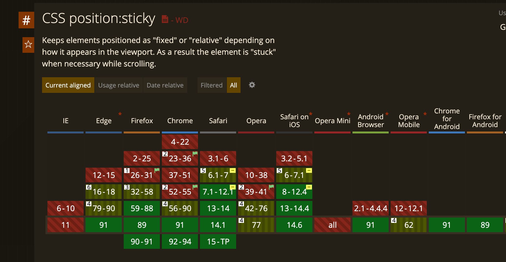

记录 CSS 重要知识点。
盒模型
css 属性 box-sizing 可以设置元素的盒模型：
- content-box： 元素大小 = width(height) + padding + border + margin
- border-box: 元素宽（高）度 = width(height)
如果设置元素 box-sizing 为 border-box，并且设置了 width 和 height，那么即使调整元素 width 和 height，元素大小也不会发生改变
边距坍塌
边距坍塌是指块元素之间的上下外边距(margin)并没有都生效，而只有他们中最大的那个生效。
边距坍塌只会发生在块元素的上下外边距，因为只有内联元素的上下外边距并不会生效。
同时 display 属性 flex,grid, postion 属性为 absolute,fixed 的块级元素，不会发生边距坍塌。
实践过程主要有三种外边距坍塌的场景（以下元素皆为块级元素）：
- 相邻的元素
- 中间没有 border 和 padding 的父子元素
- 空白元素
position 属性
position 有四个属性：static,relativ,absolute,sticky，前面三个都很常见，这里主要了解 sticky 属性。
sticky：sticky 元素根据正常文档流进行定位，相对它的最近滚动祖先和最近块级祖先，基于 top,right,bottom,left 的值进行偏移，也只有设置了这四个值，粘性定位才会生效。
以下例子中, body 元素滚动过程中，sticky 元素就像粘在具体 body 元素顶部 100px 处一样，一动不动。
1 | // css |
1 | // html |

BFC
具有 BFC 特性的元素可以看作是隔离了的独立容器，容器里面的元素不会在布局上影响到外面的元素，并且 BFC 具有普通容器所没有的一些特性。
通俗一点来讲，可以把 BFC 理解为一个封闭的大箱子，箱子内部的元素无论如何翻江倒海，都不会影响到外部。
只要元素满足下面任一条件即可触发 BFC 特性：
- html 根元素
- 浮动元素：float 除 none 以外的值
- 绝对定位元素：position (absolute、fixed)
- display 为 inline-block、table-cells、flex
- overflow 除了 visible 以外的值 (hidden、auto、scroll)
BFC 作用
- 利用 BFC 使边距坍塌不发生
- 利用 BFC 结合 float 实现两列布局
flex 布局
默认主轴为横轴：
align-content 与 align-items
align-content 在子元素有多行生效，所有行一起作为整体居中；align-items 定义当前行内的对齐方式。flex: 1
flex 为 flex-grow,flex-shrink, flex-basic 的缩写（方便记忆：能大能小的鸡鸡）。
1 | flex-grow： 1; |
Grid 布局
// TODO
垂直居中方式
- flex 布局
1 |
|
- 子元素宽度高度不确定
1 |
|
- 子元素宽度高度确定
1 |
|